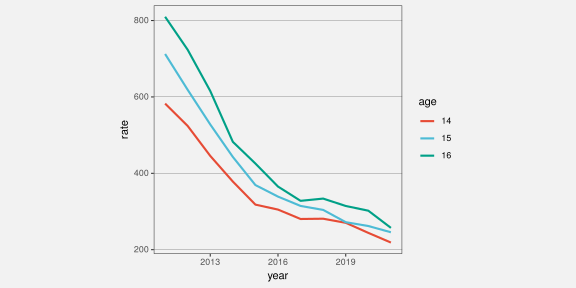
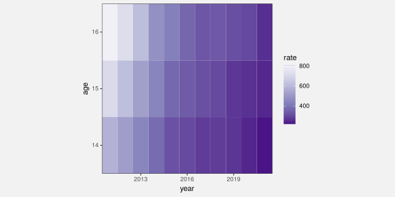

| age | 2011 | 2012 | 2013 | 2014 | 2015 | 2016 | 2017 | 2018 | 2019 | 2020 | 2021 |
|---|---|---|---|---|---|---|---|---|---|---|---|
| 14 | 583 | 524 | 446 | 378 | 318 | 305 | 280 | 281 | 270 | 244 | 219 |
| 15 | 712 | 619 | 528 | 443 | 369 | 339 | 315 | 304 | 272 | 262 | 246 |
| 16 | 810 | 723 | 615 | 482 | 426 | 365 | 328 | 334 | 314 | 302 | 257 |
How to Decide What to Draw
With Examples in R
Introduction
A data visualisation presents data values in a visual format. In an effective data visualisation, this allows features of the data to be perceived very rapidly and without conscious effort. For example, Table 1 shows data on the crime rate for youth offenders in New Zealand, for the ages 14 to 16, for each year from 2011 to 2021. With this purely text-based, tabular presentation of the data, it requires considerable effort and time to determine any trends in crime rates over time.
By contrast, with a simple line plot data visualisation like Figure 1 we can perceive the trends in crime rates easily and immediately. It is also easy to perceive more detailed features like the fact that the trend in crime rates for 16-year-olds is not completely monotonic and the fact that the crime rate for 15-year-olds (the blue line) is always greater than the crime rate for 14-year-olds (the red line) and less than the crime rate for 16-year-olds (the green line).

On the other hand, if we use a data visualisation like Figure 2, detecting overall trends becomes more difficult and perceiving detailed changes in the crime rates is a lot harder. Not all data visualisations are equally effective.
Furthermore, Figure 1 is far less effective if we are interested in a different question, for example, whether the total crime rate is completely monotonic. Does the sum of the red, blue, and green lines always decrease year on year? A single data visualisation cannot be effective for all possible questions.

Data visualisations, when used well, can be incredibly effective. The question is, how do we design a data visualisation and know that it is going to be effective? If we have designed a data visualisation that is not effective, how do we change it to make it more effective? This document describes a framework that allows us to make deliberate choices about how to present data visually.
Scope
The focus of this document is static data visualisations for presentation. The assumption is that we have data values that contain some sort of structure and we want to produce a display that makes it easy and efficient for viewers to perceive that structure. Some of the information that we cover will also apply to interactive graphics and to exploratory graphics, but the specific requirements of those types of data visualisation will not be addressed here.
TODO: link to interactive graphics books like Cook & Swayne and Theus and Unwin.
This document is also focused on what the science of perception has to tell us about effective data visualisation. We will consider factors that influence how rapidly and how accurately information can be extracted from a data visualisation. We will not cover issues of ethics beyond a basic assumption that we want to faithfully represent the structure of the data.
TODO: link to Alberto Cairo at least. For resources on this important topic, see …
Technology
In order to produce a data visualisation, we must decide what to draw and we must know how to draw it. This document is focused on what to draw, and the framework that we describe is not tied to any particular technology. However, in order to make the information more useful and applicable, this document will provide demonstrations of how to draw data visualisations using the R language for statistical computing and graphics.
Terminology
Data visualisations come in a wide variety of forms (see Figure 3), with each form having its own name: scatter plots, line plots, bar plots, histograms, etc. There are also many different names for the different components of a data visualisation: lines, bars, points, axes, scales, legends, keys, titles, sub-titles, etc.


In this framework, we will reduce that complexity in two ways. First of all, we will not distinguish between different forms of data visualisation; scatter plots, bar plots, line plots, and histograms are all just data visualisations. Secondly, we will distinguish between only three core components of a data visualisation: data symbols, guides, and labels.1
- Data symbols
- Data symbols are the geometric shapes that represent data values, for example, the lines in a line plot, the bars in a bar plot, and the segments of an annulus in a donut plot (see Figure 4).


- Guides
- The guides are the elements of a data visualisation that explain how data values are represented, for examples the axes on a line plot or bar plot and the legend on a donut plot (see Figure 5).


- Labels
- The labels are the text elements that provide context and background information about a data visualisation (e.g., titles and captions). Notice that not all text is a label.


Mappings
The process of creating a data visualisation may appear to be a complex process that involves many different decisions: What form of data visualisation should we use? How should we label the axes? What colours should we use? However, as much as possible, we are going to reduce the process of creating a data visualisation to a single main decision: What mappings should we use?
Creating a data visualisation involves mapping data values to visual representations.2 For example, Figure 7 shows the line plot of crime rates for different ages in New Zealand (this is a reproduction of Figure 1). In this plot, the data values are year, crime rate, and age (see Table 1) and the visual representation is a set of coloured lines.
We can describe the transformation from data values to visual representations in terms of a set of mappings:
The
yearandratevalues are mapped to the position of the lines (the x/y locations that the lines pass through). For example, theyear2011 and therate810 map to a position near the top-left corner of the plot; the start of the green line.The
agevalues are mapped to the colour of the lines. For example, theage16 maps to the colour green.
Figure 8 shows a heatmap of the same data (a reproduction of Figure 2). This data visualisation provides a different visual representation because it involves a different set of mappings:
The
yearandagevalues are mapped to the position of the rectangles. For example, theyear2011 and theage16 map to a position in the top-left corner of the plot; the white rectangle.The
ratevalues are mapped to the colour of the rectangles. For example, therate810 maps to white, while lowerratevalues map to progressively darker shades of purple.
Summary
Data visualisations can be incredibly effective for presenting structure in data values. However, a data visualisation can only be effective for certain data values and for certain data structures.
The goal of this document is to describe a framework that helps us to create effective data visualisations.
The main decision that we have to address is what mappings we should use to transform data values into visual representations.
References
Wilkinson, Leland. 2005. The Grammar of Graphics. Second edition. New York: Springer.
Footnotes
Gathering axes and legends together under the generic label of “guides” comes from the Grammar of Graphics (Wilkinson 2005).↩︎
The idea of ``mapping’’ data values to visual representations also comes from the Grammar of Graphics (Wilkinson 2005).↩︎